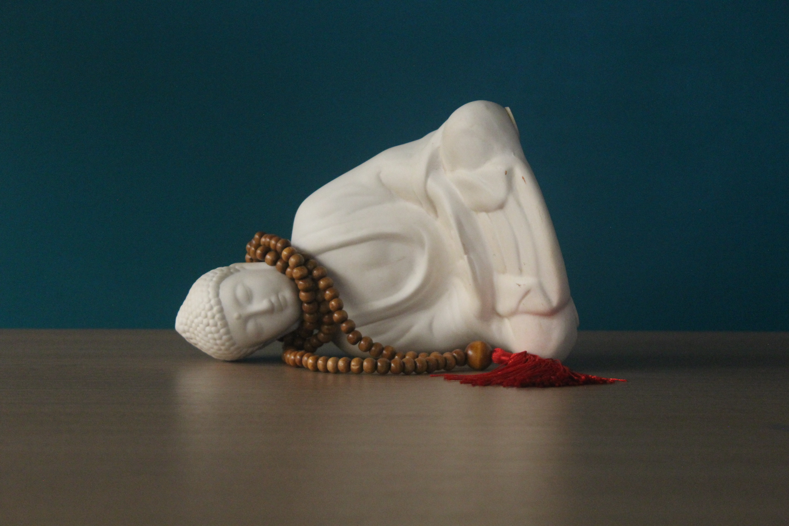

fotografias / porto ferreira / 2026
Um catálogo que agrupa todas minhas fotos tiradas para a unidade de FTDI

Esta galeria reúne os registros visuais da minha trajetória e rotina no SENAI. Cada foto retrata a vivência prática nas oficinas, o desenvolvimento de projetos, o domínio de ferramentas e a evolução constante no ambiente técnico. Mais do que imagens de um curso, este espaço é um registro da busca por qualificação e da paixão por aprender na prática